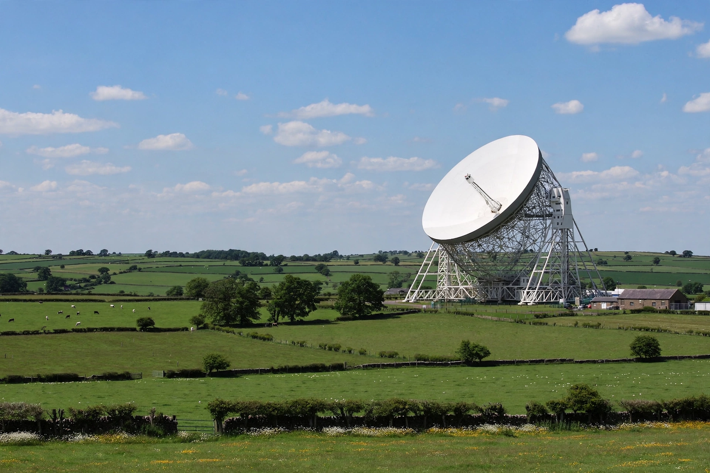

Lovell Telescope
From Wikipedia, the free encyclopedia
| Location | Jodrell Bank Observatory, Cheshire, England |
|---|---|
| Built | 1952–1957 |
| Diameter | 76.2 m (250 ft) |
| Named after | Bernard Lovell |
| Operator | University of Manchester |

The Lovell Telescope is a radio telescope at the Jodrell Bank Observatory, near Goostrey, Cheshire, in the north-west of England. When construction finished in 1957, the telescope was the largest steerable dish radio telescope in the world; it is now the third largest, after the Green Bank telescope in West Virginia and the Effelsberg telescope in Germany. The telescope was originally known as the "250-ft telescope" and later the Mark I, before being renamed in honour of its founder, Sir Bernard Lovell, in 1987.
History
Conceived by Lovell and engineered by Charles Husband, the telescope dramatically exceeded its £335,000 budget and was finished just in time to track the carrier rocket of Sputnik 1 in October 1957 — the only instrument in the West capable of doing so. During the Cold War it tracked Soviet and American space probes and played a role in early-warning intelligence. Scientifically, it was central to the discovery and study of quasars and pulsars, and to pioneering work in interferometry; it continues to operate as part of the e-MERLIN and European VLBI networks. It is a Grade I listed building, and Jodrell Bank was inscribed as a UNESCO World Heritage Site in 2019.